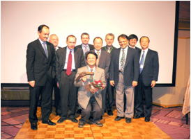

Radialist of the Year 2007
Call for the Best TRI Case Report- "A Tough or Challenge case"
performed this year !
Preliminary RoundsÅFDecember 8 (Sat), 10:00Å`11:00 at Nisseki Hall
FinalÅFDecember 8 (Sat), 19:30Å`Å@at Yokohama Royal Park Hotel 'Hosho' at
the Welcome Party
Subject Application Deadline: October 30
Application Method: Please send your name, hospital and Title by e-mail
Note:
Presentaion time must be in 10 minutes or less !
In principle, presentaions should be in English
Only PC presentations are accepted. Slide presentations are not accepted
Your presentations data must be in Microsoft Power Point format
Contents of the presentaion shall belong to the Kamakura Live Demonstration
Organizing Committee.
Registration Fee of those accepted will be waived.
Histry at Radialist of the Year
| 2004 Winner |
|
Yoshifumi Kan, MD |
|
(Fukuoka Heart Clinic) |
|
ÅuTRI for 3VD involving LMT lesionÅv |
| 2005 Winner |
|
Takaaki Katsuki, MD |
|
(Jichi Medical School) |
|
ÅuA case of TRI for Saphenous Vein GraftÅv |
| 2006 Winner |
|
Satoshi Takeshita, MD |
|
(National Cardiovascular Center) |
|
ÅuA Winding RoadÅv |
| 2007 Winner |
|
Naomi Masuda, MD |
|
(Tokai University) |
|
ÅuTwo cases of KGTÅv |
